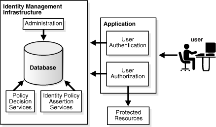
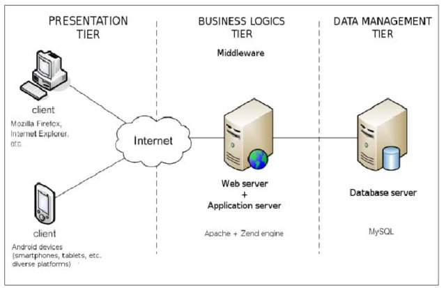
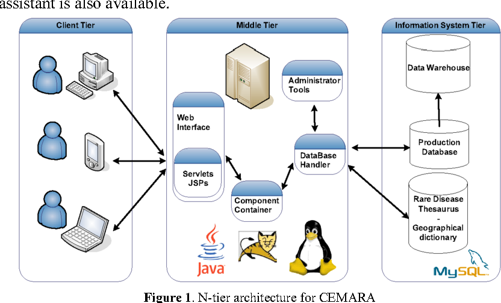

Database users
User Authentication
Ahmad Yoosofan
Database course
University of Kashan, Spring 2021

Users in general
Application users
2 tier architecture
3 tier architecture
2 vs 3 tier architecture

3 tier architecture

N-tier_architecture
Type of Users(I)
- Application Programmers
- Sophisticated Users
- Stand-alone Users
- Native Users
Type of Users(II)
- application programmer: user who implements specific application programs to access the stored data
- application user: accesses an existing application program to perform daily tasks.
- database administrator (DBA): responsible for authorizing access to the database, monitoring its use and managing all the resources to support the use of the entire database system
- end user: people whose jobs require access to a database for querying, updating and generating reports
- sophisticated user: those who use other methods, other than the application program, to access the database
Database Administrators
- Installing and upgrading the DBMS Servers
- Design and implementation:
- Performance tuning:
- Migrate database servers
- Backup and Recovery:
- Security
- Documentation
PostgreSQl
Ubuntu
sudo apt install -y postgresql postgresql-contrib libpq-dev apt-cache search postgres sudo apt install pgadmin3 sudo apt install libecpg-dev # Embedded PostgreSQL for C # sudo apt install ecpg-xc # old
Change Password
sudo -u postgres psql postgres =#\password postgres =#\q
Connect to database
psql -d postgres -U postgres -h 127.0.0.1 psql -d postgres -U postgres -h 127.0.0.1 -W psql --user=postgres --host='127.0.0.1' --password psql --db=psql --user=postgres --host='127.0.0.1' --password
Or run
pgadmin3
File --> Add Server
- name: whatever you want. for example "myDB"
- Host: 127.0.0.1
- Password: (You already assign a password for connecting to this database.)
Create users in PostgreSQL
CREATE USER ali; -- ساخت کاربر علی DROP USER ali; -- حذف کاربر علی CREATE USER ali WITH PASSWORD '1234'; -- ساخت کاربر علی با رمز 1234 DROP USER ali; CREATE USER ali PASSWORD '1234'; -- ساخت کاربر با رمز DROP USER ali; CREATE USER ali WITH SUPERUSER PASSWORD '1234'; --در اینجا SUPERUSER یعنی کاربر در سطح مدیر سامانهی پایگاه داده است.
CREATE USER ali WITH NOSUPERUSER PASSWORD '1234'; -- در اینجا NO یعنی کاربر غیر مدیر CREATE USER ali WITH SUPERUSER CREATEDB PASSWORD '1234'; -- امکان ساخت پایگاه داده برای این کاربر وجود دارد CREATEDB CREATE USER ali WITH NOSUPERUSER NOCREATEDB PASSWORD '1234'; -- امکان ساخت پایگاه داده برای این کاربر وجود ندارد NOCREATEDB ---------------- DCL (Data Control Language) ---------------- GRANT ALL PRIVILEGES ON DATABASE "test_database" to tester; -- همهی مجوزها به کاربر tester بر روی پایگاه دادهی test_database داده میشود.
GRANT ALL PRIVILEGES ON DATABASE spd to ali;
REVOKE ALL PRIVILEGES ON spd FROM ali;
GRANT INSERT, UPDATE, DELETE ON TABLE s TO ali;
REVOKE INSERT, DELETE ON TABLE s FROM ali;
REVOKE INSERT, DELETE ON TABLE s FROM ali CASCADE ;
ساختار دستور grant
GRANT { { SELECT | INSERT | UPDATE | DELETE | RULE | REFERENCES | TRIGGER } [,...] | ALL [ PRIVILEGES ] } ON [ TABLE ] tablename [, ...] TO { username | GROUP groupname | PUBLIC } [, ...] [ WITH GRANT OPTION ]
ساختار دستور revoke
REVOKE [ GRANT OPTION FOR ] { { SELECT | INSERT | UPDATE | DELETE | RULE | REFERENCES | TRIGGER } [,...] | ALL [ PRIVILEGES ] } ON [ TABLE ] tablename [, ...] FROM { username | GROUP groupname | PUBLIC } [, ...] [ CASCADE | RESTRICT ]
Console postgres
`\du` `\du+`
psql -c "\du"
behind scene
SELECT u.usename AS "Role name", CASE WHEN u.usesuper AND u.usecreatedb THEN CAST('superuser, create database' AS pg_catalog.text) WHEN u.usesuper THEN CAST('superuser' AS pg_catalog.text) WHEN u.usecreatedb THEN CAST('create database' AS pg_catalog.text) ELSE CAST('' AS pg_catalog.text) END AS "Attributes" FROM pg_catalog.pg_user u ORDER BY 1;
Some Commands
run sql command in terminal
psql -U username -d mydatabase -c 'SELECT * FROM mytable'
psql -U username -d mydatabase -c 'select pg_terminate_backend(pid)
from pg_stat_activity where datname=dc';select * from pg_stat_activity where datname='dc' psql -h $database_host -U $database_user -f boot_database_set.sql ALTER ROLE username WITH PASSWORD 'password';
Create Index
CREATE INDEX time_index ON mytable(time1);
DROP INDEX time_index;
CREATE INDEX time_index2 ON mytable(time1, time2);
Backup
Dump
pg_dump --host='127.0.0.1' --username=postgres --password pc > backup.tar pg_dumpall pg_dumpall -U postgres > all.sql pg_dumpall --schema-only > definitiononly.sql pg_dumpall --tablespaces-only > allroles.sql
Restore
psql dbname < backup.sql psql pc < backup.sql
Transaction(I)
حساب بانکی را در نظر بگیرید میخواهیم پولی را به حساب فرد دیگری بفرستیم. در سادهترین حالت باید دو دستور به روز رسانی انحام شود.
الف. از حساب من مقداری کم بشه
ب. به حساب گیرنده واریز بشه
پس دست کم دو دستور update
member( ssn_ , sname, balance)
Transaction(II)
BEGIN TRANSACTION; update .. update ... COMMIT; ---- ROLLBACK
Transaction(III)
CREATE TABLE accounts ( account_no INTEGER NOT NULL, balance DECIMAL NOT NULL DEFAULT 0, PRIMARY KEY(account_no), CHECK(balance >= 0) ); CREATE TABLE account_changes ( change_no INT NOT NULL PRIMARY KEY, account_no INTEGER NOT NULL, flag TEXT NOT NULL, amount DECIMAL NOT NULL, changed_at TEXT NOT NULL, foreign key (account_no) references accounts(account_no) );
INSERT INTO accounts (account_no,balance) VALUES (100,20100); INSERT INTO accounts (account_no,balance) VALUES (200,10100); SELECT * FROM accounts;
Transaction(III)
BEGIN TRANSACTION; UPDATE accounts SET balance = balance - 1000 WHERE account_no = 100; UPDATE accounts SET balance = balance + 1000 WHERE account_no = 200; INSERT INTO account_changes(change_no, account_no,flag,amount,changed_at) VALUES(10, 100,'-',1000,datetime('now')); INSERT INTO account_changes(change_no, account_no,flag,amount,changed_at) VALUES(11, 200,'+',1000,datetime('now')); COMMIT; SELECT * FROM accounts;
Transaction(IV)
START TRANSACTION; BEGIN TRANSACTION; BEGIN WORK; BEGIN; START;
BEGIN; INSERT INTO table1 VALUES (1); SAVEPOINT my_savepoint; INSERT INTO table1 VALUES (2); ROLLBACK TO SAVEPOINT my_savepoint; INSERT INTO table1 VALUES (3); COMMIT;
BEGIN; INSERT INTO table1 VALUES (3); SAVEPOINT my_savepoint; INSERT INTO table1 VALUES (4); RELEASE SAVEPOINT my_savepoint; COMMIT;
Commit(PostgreSQL)
\set AUTOCOMMIT off \echo :AUTOCOMMIT \set AUTOCOMMIT off
ACID
- Atomic:
- Consistent:
- Isolation:
- Durable:
DBMS = DataBase Management System (mySql, postgreSQL, SQL server, mariadb, Oracle, DB2)
View
view
حساب بانکی را در نظر بگیرید میخواهیم پولی را به حساب فرد دیگری بفرستیم. در سادهترین حالت باید دو دستور به روز رسانی انحام شود. الف. از حساب من مقداری کم بشه ب. به حساب گیرنده واریز بشه پس دست کم دو دستور update
الف و ب دو دستور یا مجموعه دستورهای مجزای SQL خواهند شد.
insert into S(sn,sname,status,city) values('S1','Smith',20,'London');
تراکنش دستور یا مجموعه دستورهایی هست که میخواهیم یا همه انجام شود یا هیچ کدام انجام نشود. transaction
Atomic: a transaction should be atomic. It means that a change cannot be broken down into smaller ones. When you commit a transaction, either the entire transaction is applied or not. Consistent: a transaction must ensure to change the database from one valid state to another. When a transaction starts and executes a statement to modify data, the database becomes inconsistent. However, when the transaction is committed or rolled back, it is important that the transaction must keep the database consistent. Isolation: a pending transaction performed by a session must be isolated from other sessions. When a session starts a transaction and executes the insert or update statement to change the data, these changes are only visible to the current session, not others. On the other hand, the changes committed by other sessions after the transaction started should not be visible to the current session. Durable: if a transaction is successfully committed, the changes must be permanent in the database regardless of the condition such as power failure or program crash. On the contrary, if the program crashes before the transaction is committed, the change should not persist. DBMS = DataBase Management System (mySql, postgreSQL, SQL server, mariadb, Oracle, DB2)
create table accounts ( account_no integer not null, balance DECIMAL not null default 0, primary key(account_no), check(balance >= 0) ); create table account_changes ( change_no int not null primary key, account_no integer not null, flag text not null, amount DECIMAL not null, changed_at text not null );
insert into accounts (account_no,balance) values (100,20100); insert into accounts (account_no,balance) values (200,10100); select * from accounts; begin transaction; update accounts set balance = balance - 1000 where account_no = 100; update accounts set balance = balance + 1000 where account_no = 200; insert into account_changes(change_no, account_no,flag,amount,changed_at) values(10, 100,'-',1000,datetime('now'));
insert into account_changes(change_no, account_no,flag,amount,changed_at) values(11, 200,'+',1000,datetime('now')); COMMIT; select * from accounts; begin transaction; update accounts set balance = balance - 20000 where account_no = 100;
insert into account_changes(account_no,flag,amount,changed_at) values(100,'-',20000,datetime('now'));
References
- http://www.postgresql.org/docs/current/static/sql-grant.html
- http://www.postgresql.org/docs/current/static/sql-revoke.html
- http://www.postgresql.org/docs/current/static/sql-createuser.html
- http://www.postgresql.org/docs/current/static/sql-createrole.html
- https://docs.oracle.com/cd/E11882_01/server.112/e10897/users_secure.htm#ADMQS0741
- https://docs.oracle.com/cd/F49540_01/DOC/server.815/a67772/dba.htm
- https://opentextbc.ca/dbdesign01/chapter/chapter-14-database-users/
- https://en.wikipedia.org/wiki/Database_administrator
- https://en.wikipedia.org/wiki/Database_administration
- https://www.oracletutorial.com/oracle-administration/
- https://chartio.com/resources/tutorials/oracle-user-privileges--how-to-show-all-privileges-for-a-user/
- https://docs.oracle.com/cd/E25178_01/oid.1111/e10029/oracle_and_oid.htm
- https://help.sap.com/doc/fiori_bs2013/1.0%202016-01/en-US/46/e42438f63966c6e10000000a1553f7/frameset.htm
- https://intellipaat.com/blog/tutorial/oracle-dba-tutorial/database-backup-restore-and-recovery/
- https://www.sqlshack.com/drop-sql-server-login-dependencies/